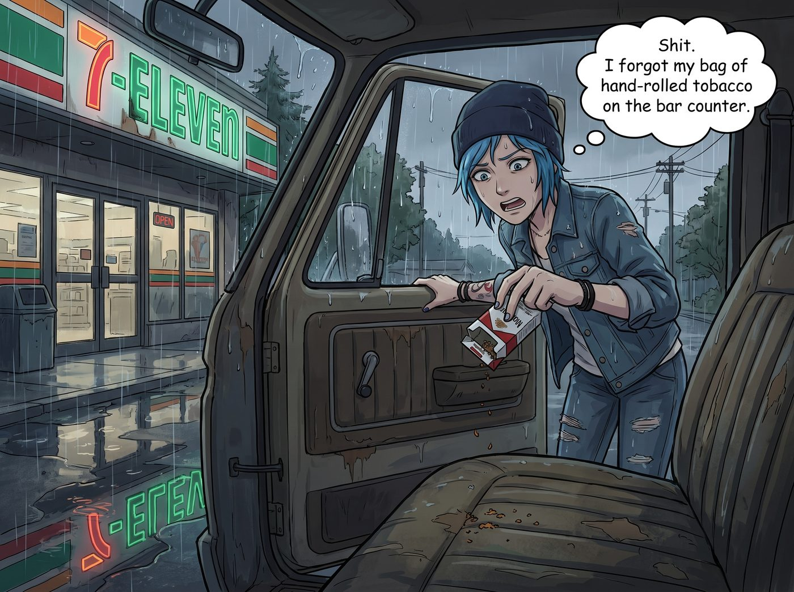
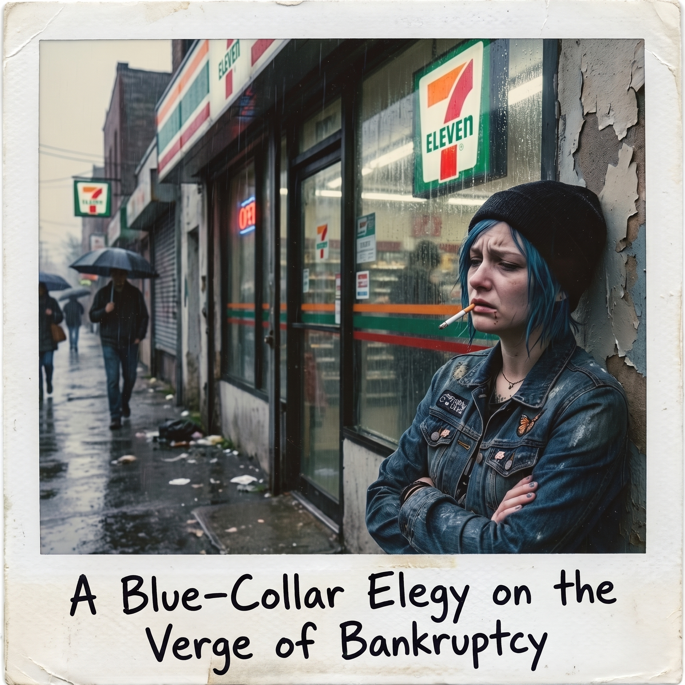

破產邊緣的藍領悲歌


西雅圖郊外的一個陰雨週末，Chloe 剛把皮卡停在一家破舊的7-Eleven門口，習慣性地伸手去摸破洞牛仔褲的口袋。
她的動作突然僵住了。
「Shit.」Chloe 絕望地把那個被捏得乾癟的菸盒掏出來，倒了倒，只有幾撮可憐的菸草碎屑掉在地墊上。「我把我那袋手捲菸絲忘在車廂吧台上了。」
一、天價菸的資本收割
五分鐘後，便利商店的收銀台前上演了一場慘烈的資本收割。
「一包萬寶路紅牌。」Chloe 把手肘撐在櫃檯上，試圖維持街頭惡霸的從容。
「好的，總共十二塊八毛五分。」打著哈欠的店員無情地報出了一個天文數字。
Chloe 的瞳孔瞬間地震了。她死死盯著收銀機上的數字，聲音因為極度的痛心而劈岔：「十二塊八？！老兄，這菸紙是用華爾街的股票印的，還是濾嘴裡塞了鑽石？我上個月在保留區買這玩意兒的錢，夠我買一整條了！」
店員翻了個白眼：「華盛頓州菸草稅，女士。買不買？」
在尼古丁戒斷症狀和暴雨的雙重逼迫下，藍髮機械師只能咬牙切齒地掏出皺巴巴的鈔票。走出店門的那一刻，她整個人像是被抽乾了靈魂，垂頭喪氣地站在便利商店閃爍的霓虹燈招牌下。
她極其小心、極其虔誠地撕開包裝，抽出一根菸叼在嘴裡。點火的時候，她的手護著打火機的火苗，彷彿在點燃一件稀世珍寶。
「我現在每抽一口，吸進去的都不是尼古丁，」Chloe 吐出一口灰白色的煙霧，看著雨幕，語氣充滿了悲壯的階級仇恨，「是我的退休金，是我在網路交易平台上辛辛苦苦掛了三個小時才賺回來的差價。這該死的州政府就是在明火執仗地搶劫！」
二、破產邊緣的藍領悲歌
站在旁邊的 Max 撐著一把透明雨傘，看著 Chloe 那副痛心疾首、彷彿剛破產的華爾街交易員般的滑稽模樣，終於忍不住「噗嗤」一聲笑了出來。
「Maxine！妳居然還笑？」Chloe 轉過頭，像一隻受了委屈的大型犬，控訴著這個殘酷的世界，「我正在被資本主義吸血，而妳的同情心呢？被龍捲風颳走了嗎？」
「我很同情妳，真的。」Max 努力壓平瘋狂上揚的嘴角，但眼睛裡的笑意根本藏不住。她舉起脖子上的拍立得，「咔嚓」一聲，將 Chloe 叼著天價菸、滿臉生無可戀的表情定格了下來。
「這張照片我要命名為《破產邊緣的藍領悲歌》。」Max 捏著正在顯影的底片，笑得肩膀直抖。
看著 Chloe 鬱悶地猛抽了一口菸，眉頭依然緊緊皺著，Max 眼裡的笑意逐漸轉化為一種溫柔的疼惜。她太了解這個把錢看得很重、永遠在精打細算的女孩了。十二塊多美金對 Victoria 來說連一杯小費都不夠，但對 Chloe 來說，這意味著她少買了一盒底片，或者少加了半桶油。
三、滿分評級的安慰
Max 將雨傘往 Chloe 那邊傾斜了一點，擋住飄進來的冷雨。她向前跨了一步，走進了 Chloe 的安全距離裡，輕輕握住了那隻夾著菸的手。
「換個角度想，Price 技師。」Max 仰起頭，用那雙清澈的藍眼睛注視著 Chloe，語氣溫軟卻帶著一絲狡黠的邏輯，「這可是妳平時絕對不捨得抽的高配版完整香菸。沒有粗糙的菸絲會掉在衣服上，濾嘴完美無瑕。在妳的特卡交易系統裡，這就相當於……一張PSA 10滿分評級的全新Base卡，對吧？」
Chloe 愣了一下，吐煙的動作慢了半拍。
Max 趁機踮起腳尖，在 Chloe 帶著淡淡菸草味和雨水涼意的側臉上，輕輕落下一個吻。
「而且，這筆虧損我來幫妳對沖。」Max 轉過身，像變魔術一樣從大衣口袋裡掏出了一大包超大份的辣味薯圈，還有一罐冰鎮的櫻桃可樂，這是在 Chloe 剛才跟店員討價還價時，她偷偷去貨架上拿著去結帳的。
「州政府搶了妳的退休金，」Max 把零食塞進 Chloe 空著的另一隻手裡，笑得像個狡猾的精靈，「那我只好用垃圾食品把它補償回來了。利潤率百分之百，免稅。這筆交易怎麼樣？」
四、成交
Chloe 看著懷裡最愛的零食，又看了看站在傘下對著她笑的 Max。那股因為高昂菸稅而產生的狂躁與肉痛，奇蹟般地被這個帶著菸味的吻和一罐櫻桃可樂徹底撫平了。
她深吸了一口氣，將手裡的菸蒂彈進了雨中的水坑裡，然後一把攬住 Max 的肩膀，將她緊緊摟進懷裡。
「成交，Caulfield。」Chloe 咧開嘴，露出了今天第一個真正放鬆的痞笑，「不過這包十二塊八的滿分評級Base卡，今晚回去我一定要把它鎖進防潮箱裡，當作我們對抗萬惡資本主義的證據。」